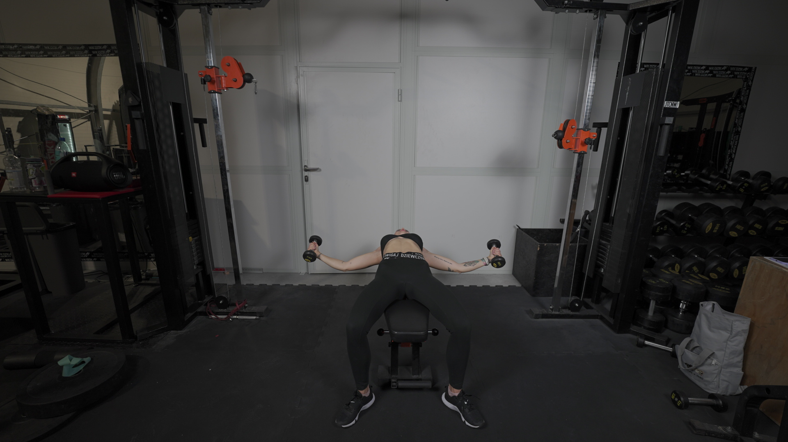
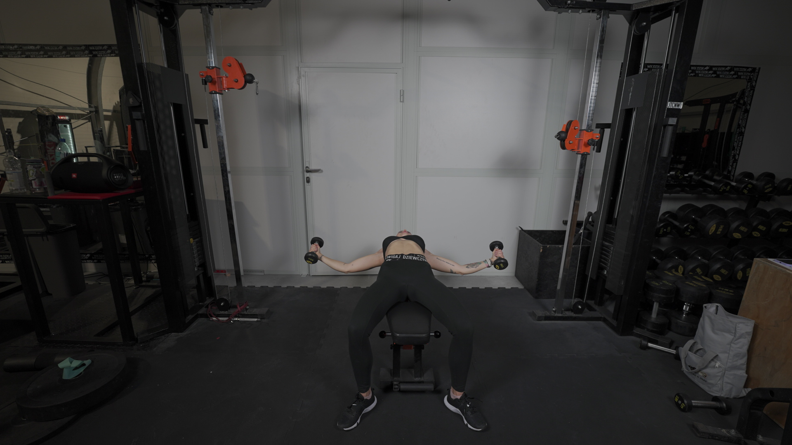

ROZPIĘTKI Z HANTLAMI
 

1. Hantle złap w obie dłonie i połóż się na ławce.
2. Umieść hantle nad głową.
3. Ściągnij łopatki i delikatnie ugnij łokcie.
4. Rozpocznij ruch opuszczania hantli na boki, prowadząc delikatnie ugięte łokcie bardzo szeroko.
5. Zakończ ruch, kiedy mięśnie Twojej klatki piersiowej są maksymalnie rozciągnięte.
6. Powróć do pozycji wyjściowej, mocno napinając mięśnie klatki piersiowej.
Nie musisz za wszelką cenę dążyć do tego, aby dłonie się ze sobą zetknęły. Maksymalne spięcie mięśni może zajść jeszcze zanim połączysz ze sobą hantle.